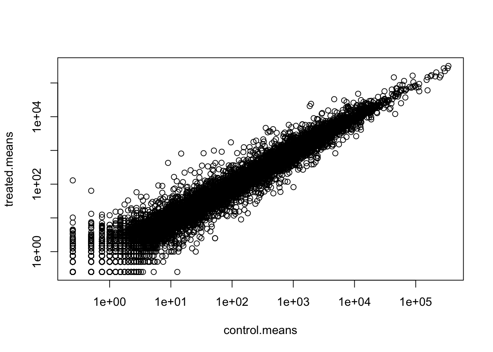

library(DESeq2)Class 12: RNASeq Analysis
Installed and loaded DESeq2, but not in the render
Get data, look at structure etc
Will need at least two things: - Count data (genes in rows and exp in cols) - metadata(aka colData)
We have this in the data provided; what we want next is to put them in our working directory
counts <- read.csv("airway_scaledcounts.csv", row.names =1)
metadata <- read.csv("airway_metadata.csv")metadata id dex celltype geo_id
1 SRR1039508 control N61311 GSM1275862
2 SRR1039509 treated N61311 GSM1275863
3 SRR1039512 control N052611 GSM1275866
4 SRR1039513 treated N052611 GSM1275867
5 SRR1039516 control N080611 GSM1275870
6 SRR1039517 treated N080611 GSM1275871
7 SRR1039520 control N061011 GSM1275874
8 SRR1039521 treated N061011 GSM1275875Quick look at the counts
head(counts) SRR1039508 SRR1039509 SRR1039512 SRR1039513 SRR1039516
ENSG00000000003 723 486 904 445 1170
ENSG00000000005 0 0 0 0 0
ENSG00000000419 467 523 616 371 582
ENSG00000000457 347 258 364 237 318
ENSG00000000460 96 81 73 66 118
ENSG00000000938 0 0 1 0 2
SRR1039517 SRR1039520 SRR1039521
ENSG00000000003 1097 806 604
ENSG00000000005 0 0 0
ENSG00000000419 781 417 509
ENSG00000000457 447 330 324
ENSG00000000460 94 102 74
ENSG00000000938 0 0 0Need to make sure that the metadata (i.e. colData) and our counts match!
metadata$id[1] "SRR1039508" "SRR1039509" "SRR1039512" "SRR1039513" "SRR1039516"
[6] "SRR1039517" "SRR1039520" "SRR1039521"colnames(counts)[1] "SRR1039508" "SRR1039509" "SRR1039512" "SRR1039513" "SRR1039516"
[6] "SRR1039517" "SRR1039520" "SRR1039521"This gives us an idea that they’re looking similar, but the better way to do it is to use ==
colnames(counts) == metadata$id[1] TRUE TRUE TRUE TRUE TRUE TRUE TRUE TRUETo check if all the inputs are true, use the all() function. This will tell you if any of the answers are false
all( colnames(counts) == metadata$id )[1] TRUEWill want to get a value for the mean expression of the control genes and compare to the experimental, and we will use base R instead of dplyr which is a little harder but something we’ll encounter more
Find the mean count values per gene for control samples
The information about control vs treated is in the metadata. To print out only the controls and then print out only the IDs from those lines
control.inds <- metadata$dex == "control"
control.ids <- metadata[control.inds,"id"]
control.counts <- counts[, control.ids]
head(control.counts) SRR1039508 SRR1039512 SRR1039516 SRR1039520
ENSG00000000003 723 904 1170 806
ENSG00000000005 0 0 0 0
ENSG00000000419 467 616 582 417
ENSG00000000457 347 364 318 330
ENSG00000000460 96 73 118 102
ENSG00000000938 0 1 2 0We want a mean value across the rows (i.e. a mean value per gene):
control.means <- rowMeans(control.counts)
head(control.means)ENSG00000000003 ENSG00000000005 ENSG00000000419 ENSG00000000457 ENSG00000000460
900.75 0.00 520.50 339.75 97.25
ENSG00000000938
0.75 Then, compare to treated means: # Q3: Making the given code more robust Also #Q4 : doing this for treated and control
treated.inds <- metadata$dex == "treated"
treated.ids <- metadata[treated.inds, "id"]
treated.counts <- counts[, treated.ids]
head(treated.counts) SRR1039509 SRR1039513 SRR1039517 SRR1039521
ENSG00000000003 486 445 1097 604
ENSG00000000005 0 0 0 0
ENSG00000000419 523 371 781 509
ENSG00000000457 258 237 447 324
ENSG00000000460 81 66 94 74
ENSG00000000938 0 0 0 0#same as above, but a lot harder to read. No advantage here!!!
treated.means <- rowMeans(counts[, metadata[metadata$dex == "treated",]$id])
head(treated.means)ENSG00000000003 ENSG00000000005 ENSG00000000419 ENSG00000000457 ENSG00000000460
658.00 0.00 546.00 316.50 78.75
ENSG00000000938
0.00 Q1: How many total genes?
nrow(counts)[1] 38694Q2 : How many control cell lines are there?
4
Combine control.means and treated.means into one dataframe # Quick plot with base R to compare control and treatment, but the initital plot looks very confusing. Adding log scale to x and y axis really helps!
Q5 (a). Create a scatter plot showing the mean of the treated samples against the mean of the control samples. Your plot should look something like the following.
plot(control.means, treated.means)
Q5 (b).You could also use the ggplot2 package to make this figure producing the plot below. What geom_?() function would you use for this plot?
geom_point
Q6. Try plotting both axes on a log scale. What is the argument to plot() that allows you to do this?
log = “xy”
meancounts <- data.frame(control.means, treated.means)
plot(meancounts, log = "xy")Warning in xy.coords(x, y, xlabel, ylabel, log): 15032 x values <= 0 omitted
from logarithmic plotWarning in xy.coords(x, y, xlabel, ylabel, log): 15281 y values <= 0 omitted
from logarithmic plot
This does exclude the genes that have an expression of 0 (log of 0 being infinity).
Log transformations:
log2(20/20)[1] 0#When nothing changes, the log-fold change is 0
#whereas when it doubles, it's a log-fold change of 1
log2(40/10)[1] 2Log2 fold change Adding it into our dataframe meancounts by using the $ to add a new column
meancounts$log2fc <- log2(meancounts$treated.means/
meancounts$control.means)
head(meancounts) control.means treated.means log2fc
ENSG00000000003 900.75 658.00 -0.45303916
ENSG00000000005 0.00 0.00 NaN
ENSG00000000419 520.50 546.00 0.06900279
ENSG00000000457 339.75 316.50 -0.10226805
ENSG00000000460 97.25 78.75 -0.30441833
ENSG00000000938 0.75 0.00 -InfNote: NaN means points that couldn’t be plotted
We want to get rid of the genes with 0 counts. Can’t say anything about them!
#Anything that isn't equal to 0 with the row sums has no counts
#We can keep everything that has counts with this:
to.keep.inds <- rowSums(meancounts[,1:2] == 0) == 0
mycounts <- meancounts[to.keep.inds,]
head(mycounts) control.means treated.means log2fc
ENSG00000000003 900.75 658.00 -0.45303916
ENSG00000000419 520.50 546.00 0.06900279
ENSG00000000457 339.75 316.50 -0.10226805
ENSG00000000460 97.25 78.75 -0.30441833
ENSG00000000971 5219.00 6687.50 0.35769358
ENSG00000001036 2327.00 1785.75 -0.38194109nrow(mycounts)[1] 21817How many genes are “up” – using the common cutoff of 2 (a 4-fold change in expression), also stated as log2-fold-change of +2 or greater?
sum(mycounts$log2fc >= 2)[1] 314Some of these will necessarily be false positives! So, we will want to use DESeq2 to do some statistical tests for a p-value and an adjusted p value
This is the way everyone else looks at RNA Seq data!
DESeq2
It also wants counts and colData and the “design” - what to compare to
#This is how well tell DESeq2 what we want it to look at
dds <- DESeqDataSetFromMatrix(countData = counts,
colData = metadata,
design = ~dex)converting counts to integer modeWarning in DESeqDataSet(se, design = design, ignoreRank): some variables in
design formula are characters, converting to factorsdds <- DESeq(dds)estimating size factorsestimating dispersionsgene-wise dispersion estimatesmean-dispersion relationshipfinal dispersion estimatesfitting model and testingres <- results(dds)
head(res)log2 fold change (MLE): dex treated vs control
Wald test p-value: dex treated vs control
DataFrame with 6 rows and 6 columns
baseMean log2FoldChange lfcSE stat pvalue
<numeric> <numeric> <numeric> <numeric> <numeric>
ENSG00000000003 747.194195 -0.3507030 0.168246 -2.084470 0.0371175
ENSG00000000005 0.000000 NA NA NA NA
ENSG00000000419 520.134160 0.2061078 0.101059 2.039475 0.0414026
ENSG00000000457 322.664844 0.0245269 0.145145 0.168982 0.8658106
ENSG00000000460 87.682625 -0.1471420 0.257007 -0.572521 0.5669691
ENSG00000000938 0.319167 -1.7322890 3.493601 -0.495846 0.6200029
padj
<numeric>
ENSG00000000003 0.163035
ENSG00000000005 NA
ENSG00000000419 0.176032
ENSG00000000457 0.961694
ENSG00000000460 0.815849
ENSG00000000938 NABuilding a volcano plot to view our data in pltos of log2 fold change vs p value
plot(res$log2FoldChange, res$padj)
So this is not super helpful.
But, we can take the log of the p value to help us out here, with a - to flip the plot to something more readable!
plot(res$log2FoldChange, -log(res$padj),
xlab = "Log2 fold change",
ylab = "Minus Log of p-value")
abline(v=c(-2,2), col="red")
# Add a horizontal line
abline(h = -log(0.05), col = "red")Adding some custom colors
mycols <- rep("gray", nrow(res))
mycols[ abs(res$log2FoldChange) > 2 ] <- "red"
inds <- (res$padj < 0.01) & (abs(res$log2FoldChange) > 2 )
mycols[ inds ] <- "blue"plot( res$log2FoldChange, -log(res$padj),
col=mycols, ylab="-Log(P-value)", xlab="Log2(FoldChange)" )
abline(v=c(-2,2), col="gray", lty=2)
abline(h=-log(0.1), col="gray", lty=2)